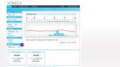
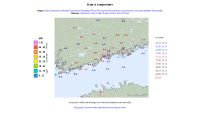

Etusivu
Haku
Sää
Kartat
Liikenne
Raha
TV
Muut
Sää Espoossa (FMI)

Täsmäsää Espoo (Foreca)
MTV sadetutka
MTV tiesää Uusimaa

Sadetutka lähialue
Sadetutka Suomi
Sadetutka pohjoismaat
Pilvet pohjoismaat (FMI)